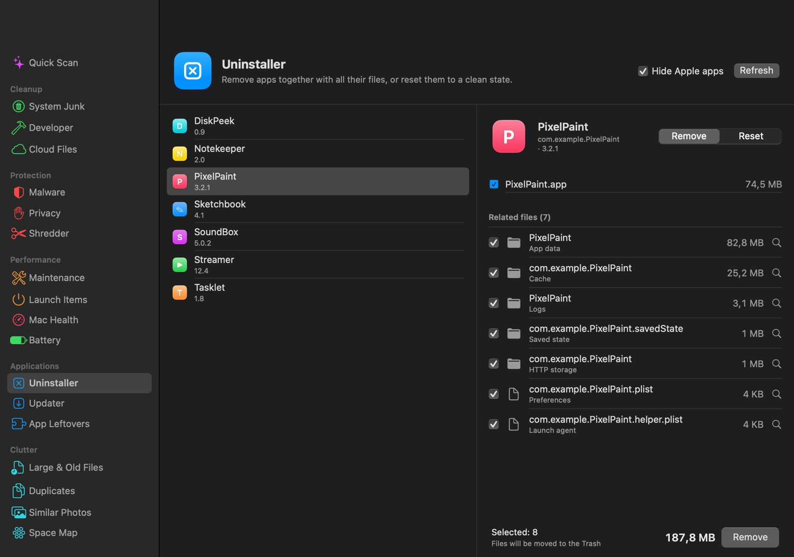
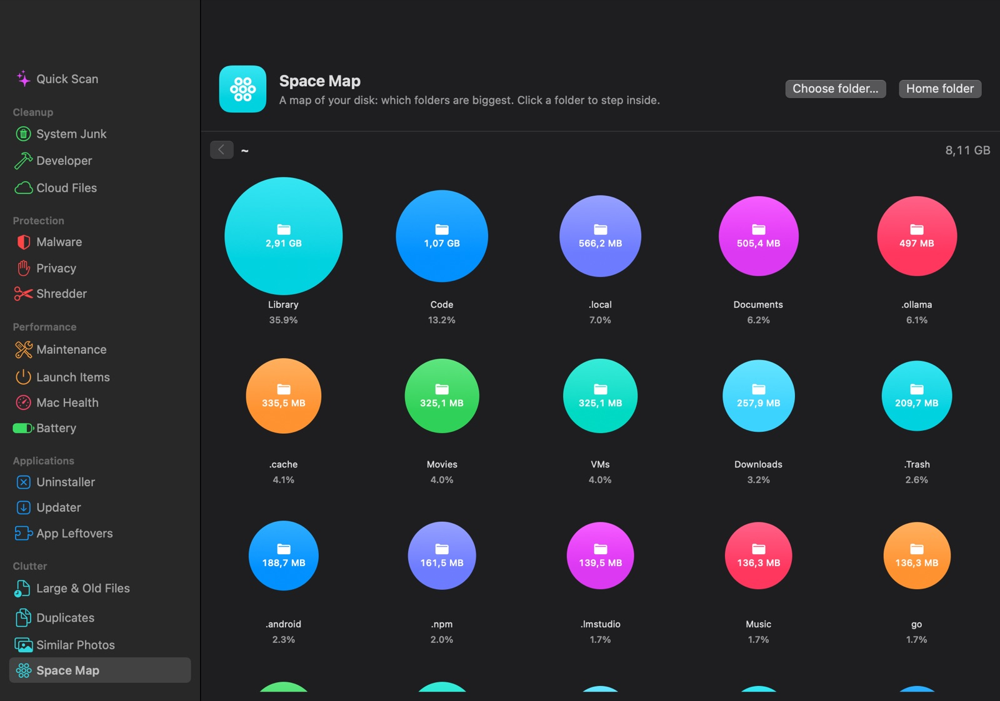
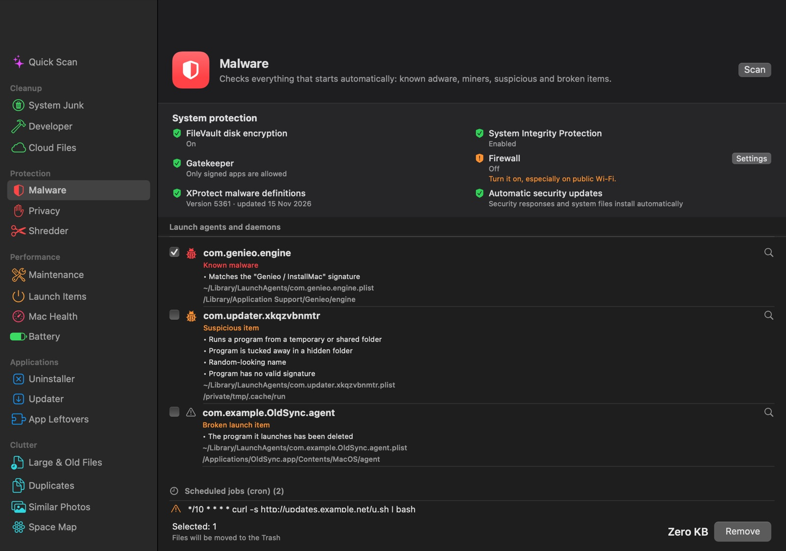
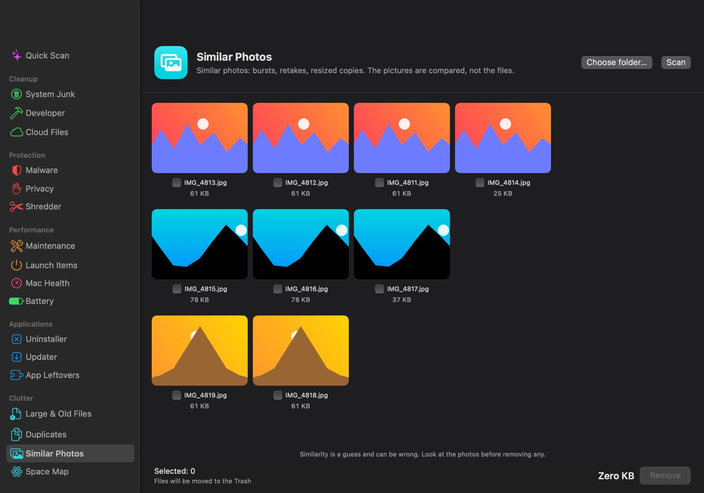
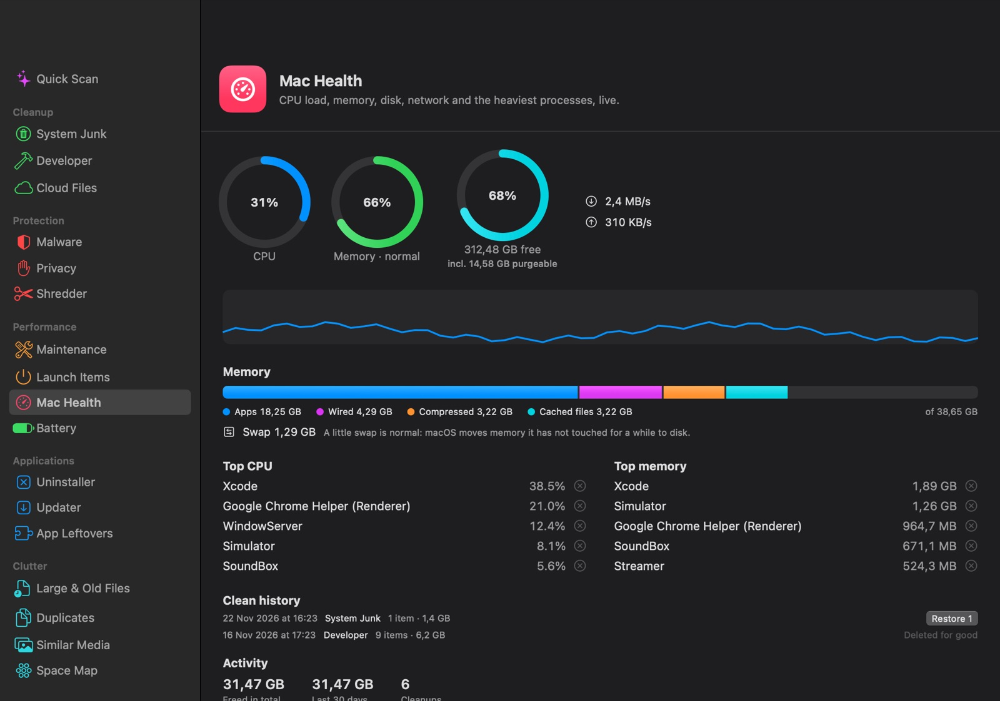
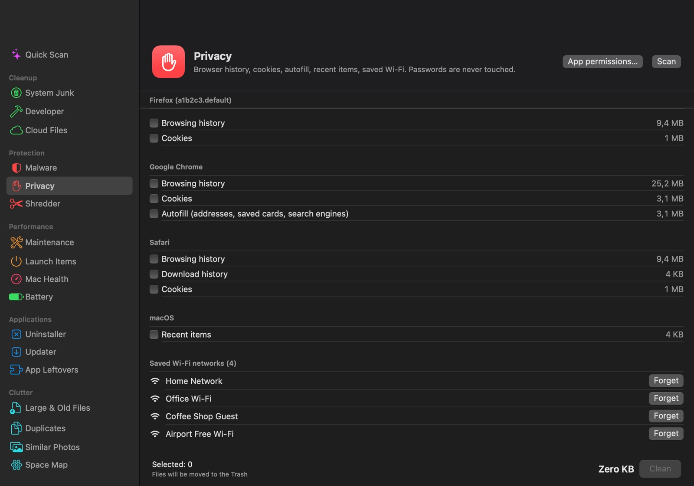
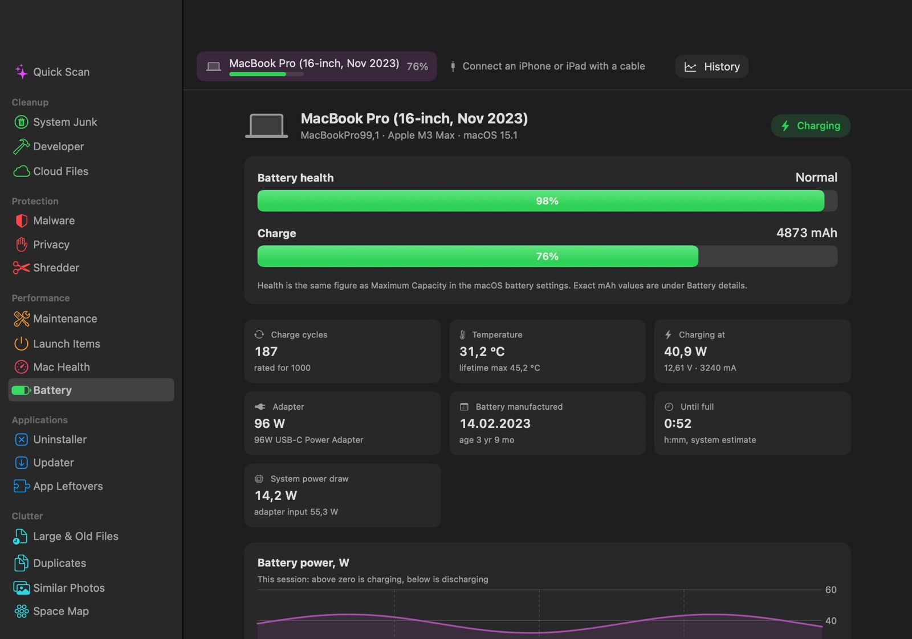
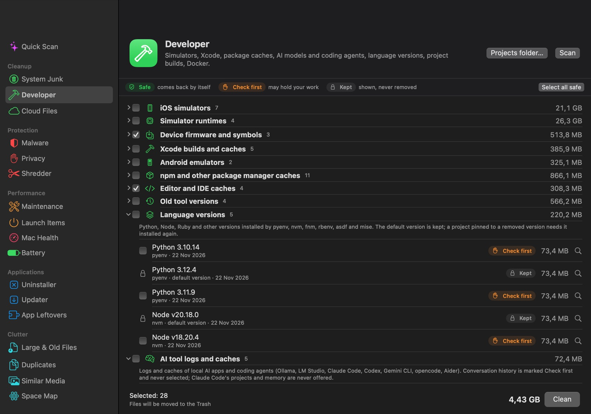

System Junk
Gigabytes you never asked for.
Caches, logs, browser data, app container caches, old installers, Mail attachments, incomplete downloads — sorted by size, each with a reason.

Clear System Data, junk, Xcode and developer clutter, and forgotten apps — free and open source. And everything you remove can come back.

Everything in one app
One scan finds what is safe to remove. Then dive into any corner of your Mac — and decide for yourself.
Caches, logs, browser data, app container caches, old installers, Mail attachments, incomplete downloads — sorted by size, each with a reason.
Preferences, caches, containers, launch agents — every trace in the Library. Or reset an app to fresh.

Folders as planets, sized by what they hold. Click to fly inside.

Adware signatures, suspicious agents, cron jobs, browser extensions, plug-ins — plus FileVault, SIP, Gatekeeper and firewall at a glance.

Identical files by SHA-256, near-identical photos by a perceptual hash. Nothing preselected; one copy always stays.

CPU, memory pressure, disk and purgeable space, network and the heaviest apps — plus a clean history where any clean can be undone.

Browser history, cookies, autofill and recent items — never passwords. Shred files beyond the Trash.

Capacity, cycles, temperature and charging power for your Mac — and for an iPhone or iPad on a cable.

For developers
Xcode, simulators, Docker, package managers and AI models pull 50–150 GB into orbit on a developer Mac. MyOpenCleaner brings them back down — one item at a time.
Build folders count only next to their project file, and inside a git repo only if nothing in them is tracked. Ollama layers shared by other models stay. Simulators go through Apple's own simctl.

Safety
A cleaner should never surprise you. MyOpenCleaner is built so the worst case is boring.
Files go to the Trash first. One click puts a whole clean back where it was — nothing is ever overwritten.
Every path is checked. System folders, Keychains, your Photos library and your exclusions can never be removed.
Before removing, it asks lsof which apps have the files open — and tells you to quit them first.
Build folders with tracked files, nested repositories or un-ignored generic names are never offered.
Backups, archives, simulators, models, duplicates and photos start unselected. You choose.
No account, no analytics, no telemetry. The only network call is an update check you start yourself.
Command line
A dry run by default, the Trash with --yes, JSON when you need it.
$ MyOpenCleaner --clean --category userCache,trash User cache: 247.5 MB (5) 130 MB ~/Library/Caches/com.example.SoundBox 70 MB ~/Library/Caches/com.example.Streamer Trash: 209.7 MB (2) Dry run: 457.2 MB in 7 items. Add --yes to move them to the Trash. $ MyOpenCleaner --clean --category userCache,trash --yes Moved to the Trash: 7 items, 457.2 MB.
Compare
| MyOpenCleaner | CleanMyMac | |
|---|---|---|
| Price | Free | Paid |
| Source code | Open (MIT) | Closed |
| Junk, uninstaller, leftovers, large files, duplicates, similar photos, space map | Yes | Yes |
| Malware and launch items, privacy, shredder, maintenance, menu bar monitor | Yes | Yes |
| Real-time malware protection, mail unsubscribe, cloud-account cleanup | No | Yes |
| Download | Free, built in public on GitHubFirst launch: one click on Open Anyway | Notarized by Apple |
Also in MyOpenCleaner: in-depth developer cleanup, Undo for a whole clean, open-file warnings, exclusions and a command-line clean.
FAQ
Yes. MyOpenCleaner is a free, open-source Mac cleaner for macOS 14 and later. It covers system junk, app uninstalling with leftovers, large and duplicate files, similar photos, a disk space map, malware and launch-item checks, privacy cleanup, maintenance and a menu bar monitor — plus in-depth developer cleanup.
Scanning never changes anything. Risky items start unselected, every path passes a safety guard, removed files go to the Trash and can be restored with Undo, and you are warned when a program still has files open. As with any cleaner, look at what is selected before you press Clean.
No. There is no telemetry and no account. The only network request is the optional update check for installed apps that use Sparkle, and only when you press “Check”.
Run Quick Scan or System Junk for caches, logs and installers; Developer for Xcode, simulators and package caches; Large & Old Files and Space Map to see what is big. Mac Health shows purgeable space, and Maintenance can thin local Time Machine snapshots.
Open Developer. DerivedData, device symbols and caches are listed with sizes; simulators and runtimes are removed through Apple's simctl, and simulators whose runtime is gone are preselected.
Developer → Downloaded AI models lists each model with its size. Nothing is preselected, and for Ollama, layers shared with other models are kept.
It is a free project without a paid Apple developer account. The download is built by GitHub Actions and signed ad hoc: the first time, open System Settings → Privacy & Security and click Open Anyway. Or build it from source in one command.
Guides
What “System Data” really is, what is safe to delete, and how to do it by hand or in one scan.
DerivedData, simulators, runtimes, device support and caches — with the exact commands.
An honest comparison of the open-source Mac cleaners worth knowing in 2026.
Lift-off
$ git clone https://github.com/javacava/myopencleaner.git $ cd myopencleaner $ ./build.sh --install Installed to /Applications/MyOpenCleaner.app
Download the app for Apple silicon and Intel, drag it to Applications and click Open Anyway once in Privacy & Security. Or build it with Xcode or the Command Line Tools. macOS 14+.
Allow Full Disk Access so it can see Safari, Mail and system caches. The app opens the right page for you.
Start with Quick Scan. Nothing is removed until you choose — and Undo is one click away.